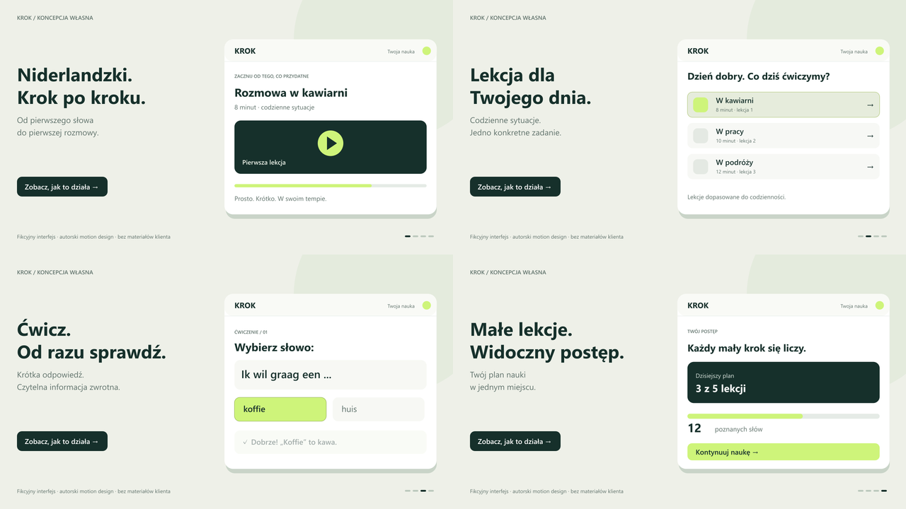

Własna próbka warsztatu / fikcyjny produkt
Od pierwszego słowa do pierwszej rozmowy.
18-sekundowa prezentacja fikcyjnego interfejsu platformy językowej „Krok”. Autorski projekt pokazuje przejście od wyboru lekcji przez ćwiczenie do widocznego postępu. Zbliżenia, animacje elementów i rytm dźwiękowy wykonano z kodu, bez wykorzystania materiałów klienta.
16:9 — strona i YouTube
9:16 — Reels / Shorts
Pobierz MP4 16:9 · Pobierz MP4 9:16
